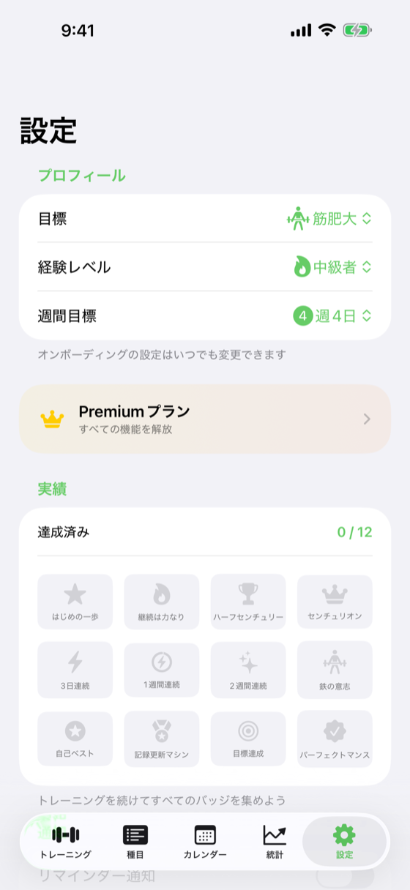

プロフィール・課金・通知・データ出力

cd ios-apps/WorkoutDiary && fastlane specs で最新UIに自動更新| セクション | 項目 | 動作 |
|---|---|---|
| プロフィール | 目標 / 経験 / 週間目標 | Picker（目標: 筋肥大/減量/健康/筋力） |
| プレミアム | 「Pro版にアップグレード」 | PremiumPlanView 起動 |
| プレミアム | 購入を復元 | StoreManager.restorePurchases() |
| 通知 | Daily reminder ON/OFF + 時刻 | NotificationService |
| 通知 | Streak Risk 通知 | v1.0.5 追加 |
| 通知 | Weekly Summary 通知 | v1.0.5 追加 |
| バッジ | 実績一覧 | AchievementService 表示 |
| データ | CSVエクスポート | データ出力機能 |
| サポート | プライバシーポリシー | app-policies/workoutdiary/ |
| サポート | 利用規約 | app-policies/workoutdiary/ |
| その他 | バージョン情報 | 1.0.5 (build 1) |
| 操作 | 遷移先 |
|---|---|
| 「Pro版にアップグレード」 | PremiumPlanView |
| プライバシー / 規約 | SafariSheet |
| バージョン | 日付 | 変更内容 |
|---|---|---|
| 1.0 | 2026-05-09 | 初版作成 |